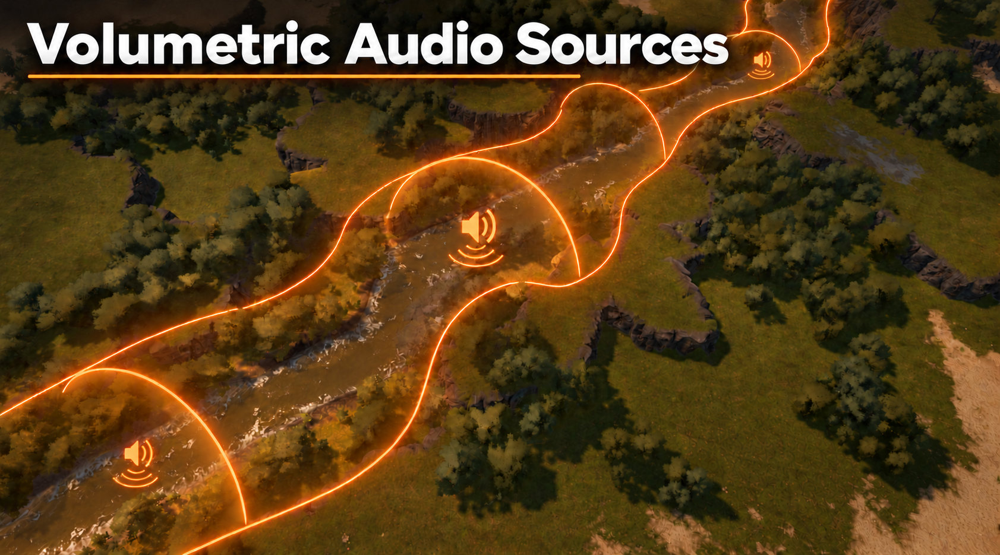
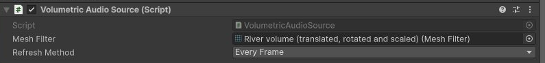
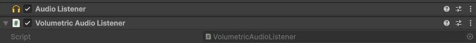
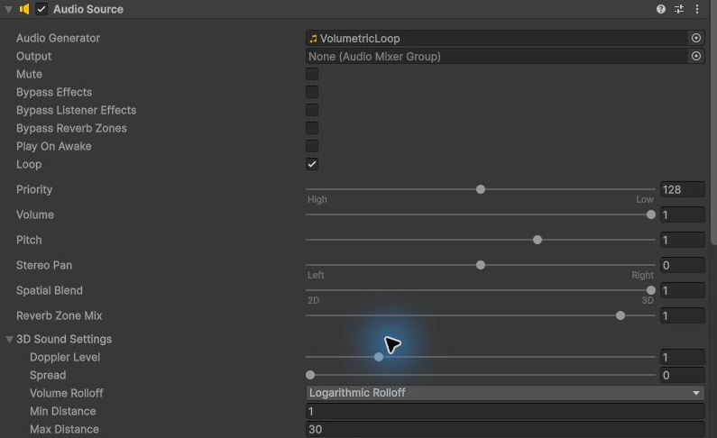
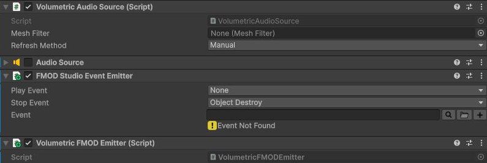
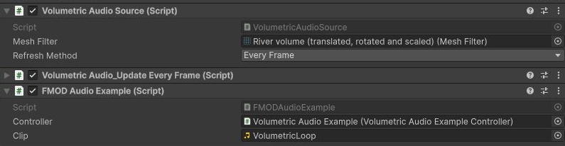
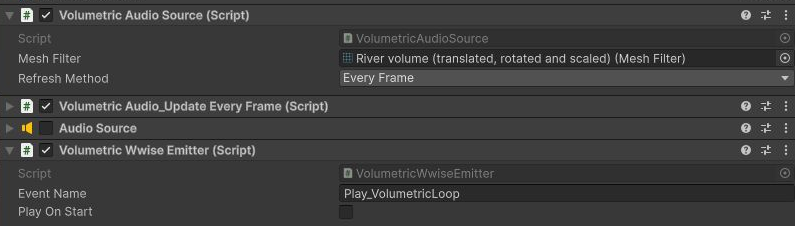

Define the sound area
Use a mesh for a river, a room or another extended environment. Its Mesh Filter supplies both geometry and the volume’s transform.
VOLUMETRIC AUDIO SOURCES · UNITY TOOL
A river should sound like a river, wherever you stand. Turn your meshes into extended sound sources that follow the listener through your world.

01 / THE IDEA
Instead of playing everything from one fixed position, Volumetric Audio Sources moves the emitter to the point on your volume closest to the listener.
Use a mesh for a river, a room or another extended environment. Its Mesh Filter supplies both geometry and the volume’s transform.
A single Volumetric Audio Listener registers through Instance. Every source uses it automatically.
The source follows the closest point. Your chosen audio backend handles playback, spatialization and distance attenuation.
Volume mode: the emitter follows the closest point.
Drag the green listener. Keyboard: focus the diagram and use arrow keys. This 2D illustration plays no audio; the dashed circle represents an example attenuation radius.
Open surfaces provide the closest surface point. A valid closed mesh also supports interior detection. The package positions emitters; occlusion and reverb are configured separately in your audio setup.
02 / SIMPLE COMPONENTS
Keep the volume object separate from the moving emitter. No individual listener assignment on every source.
Assign the volume’s Mesh Filter. Choose Every Frame, Every4thFrame or Manual updates.

Add it alongside your audio backend’s listener. All sources read the shared static Instance.

BUILT WITH UNITY JOBS + BURST COMPILER
Closest-point calculations run as Burst-compiled Unity jobs. Reuse mesh data, select an update cadence and profile the result in your project. Moving, rotating or scaling the volume is detected on the next refresh.
03 / CHOOSE YOUR AUDIO
One main asset package. Unity Audio works straight from the base package; FMOD and Wwise adapters are nested optional packages you import when you need them.
Install Burst, Collections and Mathematics in Unity’s Package Manager. Import the main asset package, then add the shared listener and assign each volume’s Mesh Filter. Enable Read/Write for imported meshes.
NO ADDITIONAL AUDIO SDK
Examples/UnityAudio/Scenes/UnityAudio.unity
IMPORT FMOD SUPPORT WHEN NEEDED
Examples/FMOD/Scenes/FMOD.unityThe quick example uses its own FMOD Core system and the included clip. It requires no Studio event or sound banks.


IMPORT WWISE SUPPORT WHEN NEEDED
Examples/Wwise/Scenes/Wwise.unityIn Play Mode, use the example’s WWISE EVENT panel to enter your event name and start or stop playback.

Optional import without the SDK, scene references and adapter contracts have been checked. Native Wwise playback and IL2CPP builds have not yet been validated in the reference test project.
WASD / arrows to move · Q E to turn · Tab point / volume · Space automatic route · M mute
The example controls use Unity’s classic Input API. For projects using the new Input System, set Active Input Handling to Both.THE FULL WALKTHROUGH
A 10-page illustrated guide covers shared components, every audio backend, example controls and troubleshooting.
04 / GOOD TO KNOW
No. The base package works with Unity Audio. Install an official audio integration first, then import its matching nested Support package only if you need it. The base package does not depend on either SDK.
The package controls the emitter position. Your Unity Audio Source, FMOD event or Wwise event plays the sound and defines spatialization, distance attenuation and other audio effects. The orange artwork is an illustration of the listening area.
The reference project was tested with Unity 6.3 LTS (6000.3.18f1), Burst 1.8.28, Collections 2.6.2 and Mathematics 1.3.2. Unity Audio and FMOD Core 2.02.09 playback were verified. Refer to the Wwise setup section for its current validation status.
Changes to the Mesh Filter’s position, rotation, scale or sharedMesh reference are detected on the next source refresh. After editing the vertices of the same mesh at runtime, call RefreshMesh(). Imported meshes must have Read/Write enabled.
Check that the source has the volume’s Mesh Filter assigned and one Volumetric Audio Listener is enabled. Choose Every Frame instead of Manual for a first test. Keep the volume on a different object from the moving emitter, and check mesh Read/Write settings.
Disable the old Volumetric Audio Listener before enabling the replacement. Only one can be active. Without an active listener, sources keep their last position. Configure the audio backend’s listener and routing on the replacement object too.
05 / WE’RE HERE TO HELP
For setup questions, bug reports or feedback, contact Awix Studio.
contact@awixstudio.comInclude the following in your message:
Start with the user guide’s troubleshooting section on page 10. A small reproduction scene makes an issue easier to diagnose.